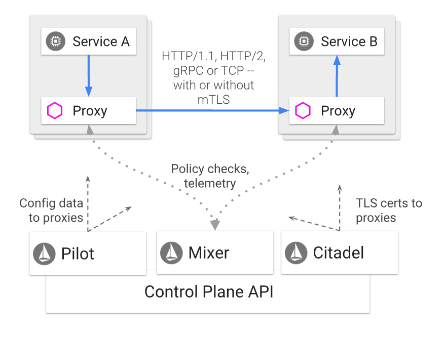
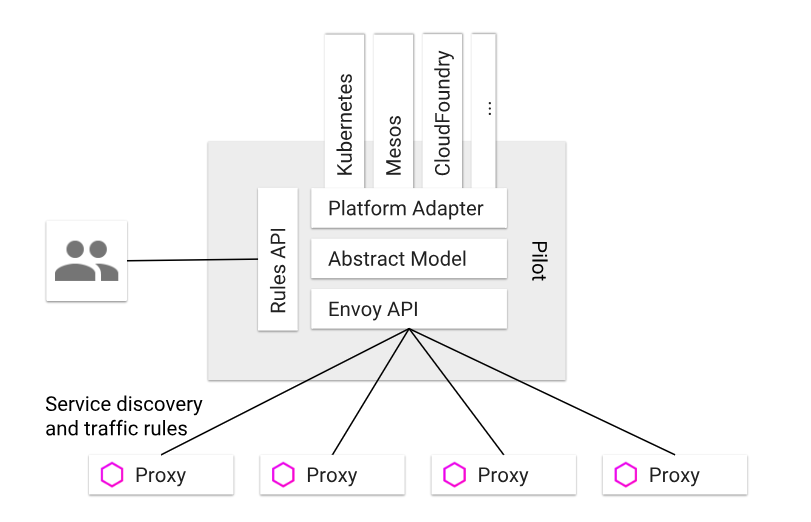
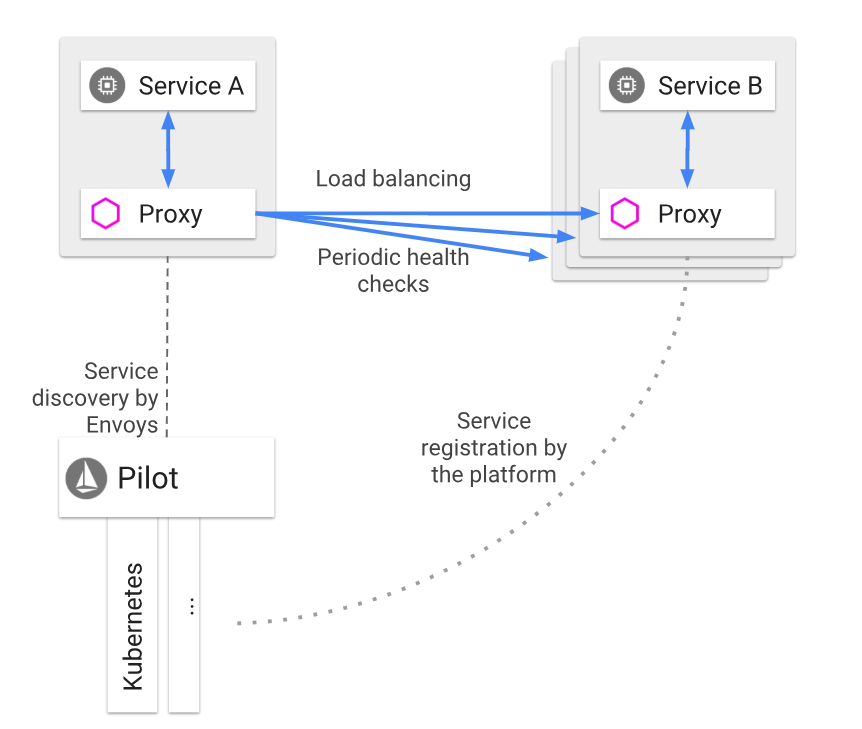
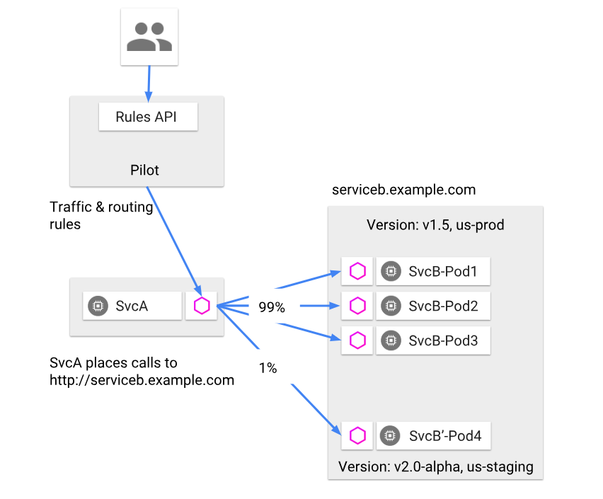
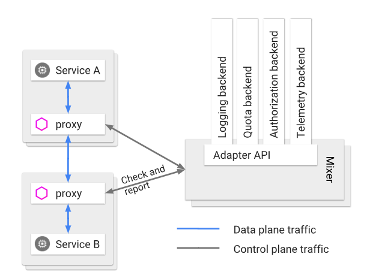
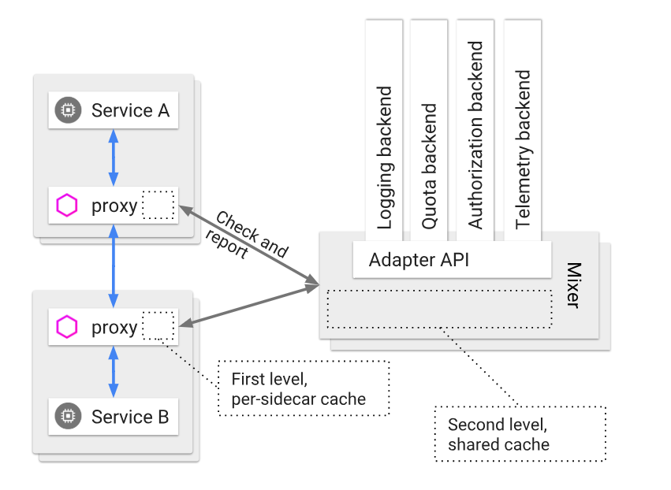
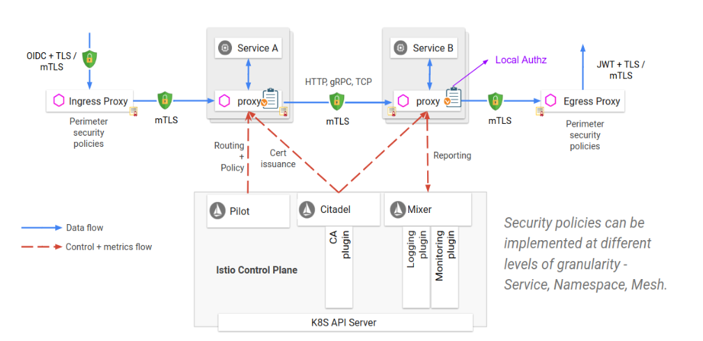

- 00 开篇词 微服务，从放弃到入门.md.html
- 01 到底什么是微服务？.md.html
- 02 从单体应用走向服务化.md.html
- 03 初探微服务架构.md.html
- 04 如何发布和引用服务？.md.html
- 05 如何注册和发现服务？.md.html
- 06 如何实现RPC远程服务调用？.md.html
- 07 如何监控微服务调用？.md.html
- 08 如何追踪微服务调用？.md.html
- 09 微服务治理的手段有哪些？.md.html
- 10 Dubbo框架里的微服务组件.md.html
- 11 服务发布和引用的实践.md.html
- 12 如何将注册中心落地？.md.html
- 13 开源服务注册中心如何选型？.md.html
- 14 开源RPC框架如何选型？.md.html
- 15 如何搭建一个可靠的监控系统？.md.html
- 16 如何搭建一套适合你的服务追踪系统？.md.html
- 17 如何识别服务节点是否存活？.md.html
- 18 如何使用负载均衡算法？.md.html
- 19 如何使用服务路由？.md.html
- 20 服务端出现故障时该如何应对？.md.html
- 21 服务调用失败时有哪些处理手段？.md.html
- 22 如何管理服务配置？.md.html
- 23 如何搭建微服务治理平台？.md.html
- 24 微服务架构该如何落地？.md.html
- 25 微服务为什么要容器化？.md.html
- 26 微服务容器化运维：镜像仓库和资源调度.md.html
- 27 微服务容器化运维：容器调度和服务编排.md.html
- 28 微服务容器化运维：微博容器运维平台DCP.md.html
- 29 微服务如何实现DevOps？.md.html
- 30 如何做好微服务容量规划？.md.html
- 31 微服务多机房部署实践.md.html
- 32 微服务混合云部署实践.md.html
- 33 下一代微服务架构Service Mesh.md.html
- 34 Istio：Service Mesh的代表产品.md.html
- 35 微博Service Mesh实践之路（上）.md.html
- 36 微博Service Mesh实践之路（下）.md.html
- 微博技术解密（上） 微博信息流是如何实现的？.md.html
- 微博技术解密（下）微博存储的那些事儿.md.html
- 结束语 微服务，从入门到精通.md.html
- 阿忠伯的特别放送 答疑解惑01.md.html
- 阿忠伯的特别放送 答疑解惑02.md.html
- 捐赠
34 Istio：Service Mesh的代表产品
专栏上一期我们聊了Service Mesh，并以Linkerd为例介绍了Service Mesh的架构。随着技术发展，现在来看Linkerd可以说是第一代Service Mesh产品，到了今天当我们再谈到Service Mesh时，往往第一个想到的是Istio。为什么我认为Istio可以称得上是Service Mesh的代表产品呢？在我看来主要有以下几个原因：
相比Linkerd，Istio引入了Control Plane的理念，通过Control Plane能带来强大的服务治理能力，可以称得上是Linkerd的进化，算是第二代的Service Mesh产品。
Istio默认的SideCar采用了Envoy，它是用C++语言实现的，在性能和资源消耗上要比采用Scala语言实现的Linkerd小，这一点对于延迟敏感型和资源敏感型的服务来说，尤其重要。
有Google和IBM的背书，尤其是在微服务容器化的大趋势下，云原生应用越来越受欢迎，而Google开源的Kubernetes可以说已经成为云原生应用默认采用的容器平台，基于此Google可以将Kubernetes与Istio很自然的整合，打造成云原生应用默认的服务治理方案。
现在我们一起走进Istio的架构，看看它各部分的实现原理，希望能让你有所收获。
Istio整体架构
如下图所示，Istio的架构可以说由两部分组成，分别是Proxy和Control Plane。
Proxy，就是前面提到的SideCar，与应用程序部署在同一个主机上，应用程序之间的调用都通过Proxy来转发，目前支持HTTP/1.1、HTTP/2、gRPC以及TCP请求。
Control Plane，与Proxy通信，来实现各种服务治理功能，包括三个基本组件：Pilot、Mixer以及Citadel。
- （图片来源：https://istio.io/docs/concepts/what-is-istio/arch.svg）
下面我来详细分解Istio架构，看看每一个组件的作用和工作原理。
Proxy
Istio的Proxy采用的是Envoy，Envoy是跟上一期提到的Linkerd是同一代的产品，既要作为服务消费者端的正向代理，又要作为服务提供者端的反向代理，一般需要具备服务发现、服务注册、负载均衡、限流降级、超时熔断、动态路由、监控上报和日志推送等功能，它主要包含以下几个特性：
性能损耗低。因为采用了C++语言实现，Envoy能提供极高的吞吐量和极少的长尾延迟，而且对系统的CPU和内存资源占用也不大，所以跟业务进程部署在一起不会对业务进程造成影响。
可扩展性高。Envoy提供了可插拔过滤器的能力，用户可以开发定制过滤器以满足自己特定的需求。
动态可配置。Envoy对外提供了统一的API，包括CDS（集群发现服务）、RDS（路由发现服务）、LDS（监听器发现服务）、EDS（EndPoint发现服务）、HDS（健康检查服务）、ADS（聚合发现服务）等。通过调用这些API，可以实现相应配置的动态变更，而不需要重启Envoy。
Envoy是Istio中最基础的组件，所有其他组件的功能都是通过调用Envoy提供的API，在请求经过Envoy转发时，由Envoy执行相关的控制逻辑来实现的。
Pilot
Pilot的作用是实现流量控制，它通过向Envoy下发各种指令来实现流量控制，它的架构如下图所示。从架构图里可以看出，Pilot主要包含以下几个部分：
Rules API，对外封装统一的API，供服务的开发者或者运维人员调用，可以用于流量控制。
Envoy API，对内封装统一的API，供Envoy调用以获取注册信息、流量控制信息等。
抽象模型层，对服务的注册信息、流量控制规则等进行抽象，使其描述与平台无关。
平台适配层，用于适配各个平台如Kubernetes、Mesos、Cloud Foundry等，把平台特定的注册信息、资源信息等转换成抽象模型层定义的平台无关的描述。
- （图片来源：https://istio.io/docs/concepts/traffic-management/PilotAdapters.svg）
那么具体来讲，Pilot是如何实现流量管理功能的呢？
1.服务发现和负载均衡
就像下图所描述的那样，服务B也就是服务提供者注册到对应平台的注册中心中去，比如Kubernetes集群中的Pod，启动时会注册到注册中心etcd中。然后服务A也就是服务消费者在调用服务B时，请求会被Proxy拦截，然后Proxy会调用Pilot查询可用的服务提供者节点，再以某种负载均衡算法选择一个节点发起调用。
除此之外，Proxy还会定期检查缓存的服务提供者节点的健康状况，当某个节点连续多次健康检查失败就会被从Proxy从缓存的服务提供者节点列表中剔除。
- （图片来源：https://istio.io/docs/concepts/traffic-management/LoadBalancing.svg）
2.请求路由
Pilot可以对服务进行版本和环境的细分，服务B包含两个版本v1.5和v2.0-alpha，其中v1.5是生产环境运行的版本，而v2.0-alpha是灰度环境运行的版本。当需要做A/B测试时，希望灰度服务B的1%流量运行v2.0-alpha版本，就可以通过调用Pilot提供的Rules API，Pilot就会向Proxy下发路由规则，Proxy在转发请求时就按照给定的路由规则，把1%的流量转发给服务B的v2.0-alpha版本，99%的流量转发给服务B的v1.5版本。
- （图片来源：https://istio.io/docs/concepts/traffic-management/ServiceModel_Versions.svg）
3.超时重试
缺省状态下，Proxy转发HTTP请求时的超时是15s，可以通过调用Pilot提供的Rules API来修改路由规则，覆盖这个限制。比如下面这段路由规则，表达的意思是ratings服务的超时时间是10s。
apiVersion: networking.istio.io/v1alpha3
kind: VirtualService
metadata:
name: ratings
spec:
hosts:
- ratings
http:
- route:
- destination:
host: ratings
subset: v1
timeout: 10s
除此之外，还可以通过修改路由规则，来指定某些HTTP请求的超时重试次数，比如下面这段路由规则，表达的意思就是ratings服务的超时重试次数总共是3次，每一次的超时时间是2s。
apiVersion: networking.istio.io/v1alpha3
kind: VirtualService
metadata:
name: ratings
spec:
hosts:
- ratings
http:
- route:
- destination:
host: ratings
subset: v1
retries:
attempts: 3
perTryTimeout: 2s
4.故障注入
Istio还提供了故障注入的功能，能在不杀死服务节点的情况下，通过修改路由规则，将特定的故障注入到网络中。它的原理是在TCP层制造数据包的延迟或者损坏，从而模拟服务超时和调用失败的场景，以此来观察应用是否健壮。比如下面这段路由规则的意思是对v1版本的ratings服务流量中的10%注入5s的延迟。
apiVersion: networking.istio.io/v1alpha3
kind: VirtualService
metadata:
name: ratings
spec:
hosts:
- ratings
http:
- fault:
delay:
percent: 10
fixedDelay: 5s
route:
- destination:
host: ratings
subset: v1
而下面这段路由规则意思是对v1版本的ratings服务流量中的10%注入HTTP 400的错误。
apiVersion: networking.istio.io/v1alpha3
kind: VirtualService
metadata:
name: ratings
spec:
hosts:
- ratings
http:
- fault:
abort:
percent: 10
httpStatus: 400
route:
- destination:
host: ratings
subset: v1
Mixer
Mixer的作用是实现策略控制和监控日志收集等功能，实现方式是每一次Proxy转发的请求都要调用Mixer，它的架构请见下图。而且Mixer的实现是可扩展的，通过适配层来适配不同的后端平台，这样的话Istio的其他部分就不需要关心各个基础设施比如日志系统、监控系统的实现细节。
- （图片来源：https://istio.io/docs/concepts/policies-and-telemetry/topology-without-cache.svg）
理论上每一次的服务调用Proxy都需要调用Mixer，一方面检查调用的合法性，一方面要上报服务的监控信息和日志信息，所以这就要求Mixer必须是高可用和低延迟的，那么Mixer是如何做到的呢？下图是它的实现原理，从图中你可以看到Mixer实现了两级的缓存结构：
Proxy端的本地缓存。为了减少Proxy对Mixer的调用以尽量降低服务调用的延迟，在Proxy这一端会有一层本地缓存，但由于Proxy作为SideCar与每个服务实例部署在同一个节点上，所以不能对服务节点有太多的内存消耗，所以就限制了Proxy本地缓存的大小和命中率。
Mixer的本地缓存。Mixer是独立运行的，所以可以在Mixer这一层使用大容量的本地缓存，从而减少对后端基础设施的调用，一方面可以减少延迟，另一方面也可以最大限度减少后端基础设施故障给服务调用带来的影响。
- （图片来源：https://istio.io/docs/concepts/policies-and-telemetry/topology-with-cache.svg）
那么Mixer是如何实现策略控制和监控日志收集功能呢？
1.策略控制
Istio支持两类的策略控制，一类是对服务的调用进行速率限制，一类是对服务的调用进行访问控制，它们都是通过在Mixer中配置规则来实现的。具体来讲，速率限制需要配置速率控制的yaml文件，每一次Proxy转发请求前都会先调用Mixer，Mixer就会根据这个yaml文件中的配置，来对调用进行速率限制。比如下面这段配置表达的意思是服务默认访问的速率限制是每秒5000次，除此之外还定义了两个特殊限制，第一个是v3版本的reviews服务请求ratings服务的速率限制是每5秒1次，第二个是其他服务请求ratings服务的速率限制是每10秒5次。
apiVersion: config.istio.io/v1alpha2
kind: memquota
metadata:
name: handler
namespace: istio-system
spec:
quotas:
- name: requestcount.quota.istio-system
maxAmount: 5000
validDuration: 1s
overrides:
- dimensions:
destination: ratings
source: reviews
sourceVersion: v3
maxAmount: 1
validDuration: 5s
- dimensions:
destination: ratings
maxAmount: 5
validDuration: 10s
而访问控制需要配置访问控制的yaml文件，每一次Proxy转发请求前都会先调用Mixer，Mixer就会根据这个yaml文件中的配置，来对调用进行访问控制。比如下面这段配置表达的意思是v3版本的reviews服务调用ratings服务就会被拒绝。
apiVersion: "config.istio.io/v1alpha2"
kind: rule
metadata:
name: denyreviewsv3
spec:
match: destination.labels["app"] == "ratings" && source.labels["app"]=="reviews" && source.labels["version"] == "v3"
actions:
- handler: denyreviewsv3handler.denier
instances: [ denyreviewsv3request.checknothing ]
2.监控和日志收集
跟策略控制的实现原理类似，Mixer的监控、日志收集功能也是通过配置监控yaml文件来实现的，Proxy发起的每一次服务调用都会先调用Mixer，把监控信息发给Mixer，Mixer再根据配置的yaml文件来决定监控信息该发到哪。示例yaml文件可以参考这个链接。
Citadel
Citadel的作用是保证服务之间访问的安全，它的工作原理见下图，可见实际的安全保障并不是Citadel独立完成的，而是需要Proxy、Pilot以及Mixer的配合，具体来讲，
Citadel里存储了密钥和证书。
通过Pilot把授权策略和安全命名信息分发给Proxy。
Proxy与Proxy之间的调用使用双向TLS认证来保证服务调用的安全。
最后由Mixer来管理授权和审计。
- （图片来源：https://istio.io/docs/concepts/security/architecture.svg）
总结
今天我给你详细讲解了Istio的架构及其基本组件Proxy、Pilot、Mixer以及Citadel的工作原理，从Istio的设计和实现原理可以看出，它是采用模块化设计，并且各个模块之间高度解耦，Proxy专注于负责服务之间的通信，Pilot专注于流量控制，Mixer专注于策略控制以及监控日志功能，而Citadel专注于安全。正是这种高度模块化的设计，使得Istio的架构极具扩展性和适配性，如果你想加强流量控制方面的功能，可以在Pilot模块中定制开发自己的代码，而不需要修改其他模块；如果你想增加一种监控系统支持，可以在Mixer模块中添加对这个监控系统的适配器，就能接入Istio。除此之外，虽然Istio由Google和IBM主导，但也没有完全与Kubernetes平台绑定，你也可以在Mesos或者AWS上运行Istio，可见它的适配性极强，这也是Istio的强大之处，以至于它的竞争对手Linkerd也开始支持Istio，作为可选的Proxy组件之一。
思考题
Mixer的一个功能是实现服务调用的日志收集，假如某一个服务调用并发量很高，而每一次调用都经过Proxy代理请求Mixer，再由Mixer调用后端的日志系统的话，整个链路的网络延迟就会对服务调用的性能影响很大，你有什么优化建议吗？
欢迎你在留言区写下自己的思考，与我一起讨论。
扩展阅读：
© 2019 - 2023 Liangliang Lee. Powered by gin and hexo-theme-book.